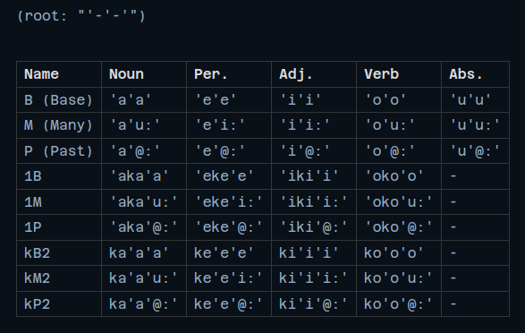

<!DOCTYPE html>
<html lang='en'></html>
<head>
<meta charset='UTF-8'>
<meta content='width=device-width, initial-scale=1.0' name='viewport'>
<title>TymixNow&#39;s Main Page</title>
<link href='https://fonts.googleapis.com/css2?family=Material+Symbols+Rounded:opsz,wght,FILL,GRAD@20..48,100..700,0..1,-50..200&amp;icon_names=music_home,music_note,science' rel='stylesheet'>
<link href='main.css' rel='stylesheet'>
</head>
<body>
<nav>
<ul>
<li>
<a class='material-symbols-rounded' href='/index.html'>home</a>
</li>
<li>
<a class='material-symbols-rounded' href='/projects.html'>science</a>
</li>
<li>
<a class='material-symbols-rounded' href='/music.html'>music_note</a>
</li>
</ul>
</nav>
<div class='main-wrapper'>
<div class='scroll-bg bg'>
<div class='top-box box'>
<div class='codename'>
<a href='https://github.com/TymixNow/Worldbuilding'>
TCR building finale
</a>
</div>
<div class='code-expl'>Not yet the end of the project. Quite the opposite.</div>
<div class='img-box box'>

</div>
<div class='post-desc-box box'>The project is not over yet. It's just the beginning. <br> What is ending is the first stage of the project. <br> That is, building the basic structure of the language. <br> The next stage is to upgrade the vocabulary and grammar of the language, as well as evolve it.</div>
</div>
</div>
</div>
</body>
